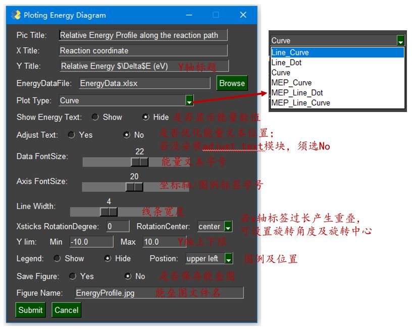

matplotlib绘制势能面剖面图
作为计算化学工作者，工作中经常需要绘制势能面剖面图，采用Origin绘制大量这种图时显得特别耗时。本文基于Python中的matplotlib库编写了一键生成势能面剖面图的脚本，可画出平滑曲线图和实虚线相间的折线图。
matplotlib运行环境及操作步骤
脚本运行环境配置
windows系统下需安装anaconda3及matplotlib模块；
- anaconda3下载地址：https://www.anaconda.com/distribution/
- Anaconda3安装完成后，打开Anaconda Prompt，安装matplotlib模块，运行命令：
1
conda install -c conda-forge matplotlib
- 需安装adjustText模块，可改善文本标签重叠情况
打开Anaconda Prompt，安装adjustText模块，运行命令：1
conda install -c phlya adjusttext
- 需安装PySimpleGUI模块，显示参数调整面板
打开Anaconda Prompt，安装PySimpleGUI模块，运行命令：1
conda install -c conda-forge pysimplegui
脚本运行格式
- 打开Anaconda Prompt，进入脚本所在目录，运行命令
1
python plot_energyProfile.py
Excel模板
- EnergyProfile.xlsx 格式如图，第一行为不同路径的名称，第二行为不同路径显示的颜色，对路径个数无要求，可按需求添加更改，第三行为线条类型（-表示实现，–表示虚线）。脚本支持能量数据点部分缺省。
如若xlrd版本过高，无法读取xlsx文件，可转换为旧版格式xls
图像微调
- 若修改能量值小数点后位数，可搜索{:.1f}，将字母f前的数字修改为对应的数字；
- 若能量值文本相互重叠或与所绘曲线重叠，也可将图片保存为eps格式，用Adobe Illustrator打开，删除背景，选中能量值，可移动到合适位置；
- matplotlib支持绘制数学公式，以
$作为开始和结束符中间包含数学公式；因此，若x轴y轴标签中有上下标，可以用$ $括起来，上标用^，下标用_，比如$NH_3$表示NH3；但是这样处理，显示出来的字体是斜体样式，可在对应的命令（plt.xticks, plt.yticks, plt.xlabel, plt.ylabel）中添加fontstyle=”normal”即可恢复正常字体样式； - 对于不同自旋态的能量图绘制，MEP曲线颜色默认设置为灰色grey，若需修改可在脚本中搜索grey字符进行修改；